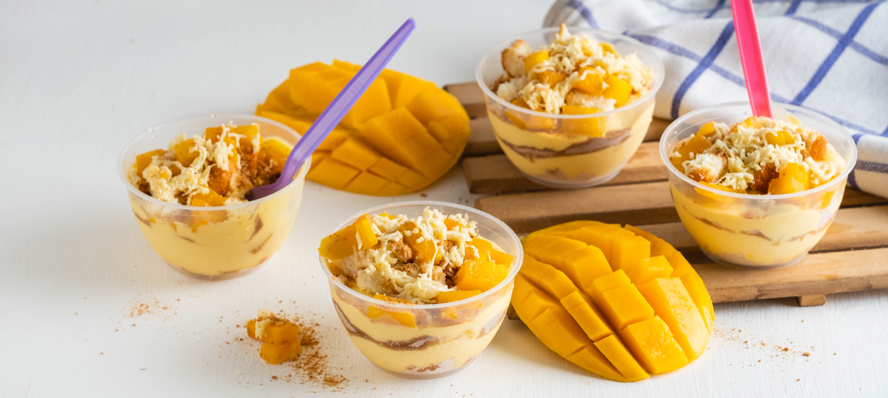

CHEESY-MANGO-GRAHAM
>
Prep Time:
10min
Yield:
7min
Ad To cart
Ingrediants
4 Mangoes, small medium ripe
24 pieces Graham crackers
500 ml All-purpose cream
300 ml Condensed milk, sweetened
steps
Ripe crackers
slice mangoes and put them ontop
lay pieces of graham crackers
put crackers and mangoes ontop of crackers
than lay condensed milk